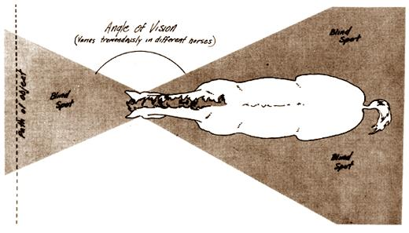

First-time farmers usually do pretty well with gardens, chopping wood and building outhouses . . . but the birth of that first calf or litter of pigs generally sets 'em back a couple of notches. R.J. Holliday DVM, a veterinarian in Missouri and MOTHER contributor, intends to remedy the situation. His tool? A new handbook precisely designed to explain all the animal facts of life in language that new back-to-the-landers can understand.
MOTHER is serializing the manual as Dr. Holliday completes each chapter and here's installment No. 8:
N o other facet of good herdsmanship demands as much attention to detail as does the management of horses. It's always sad to see a good animal ruined or a promising young rider injured . . . just for lack of the little bits and pieces of information that ensure adequate care of the mount and safety for the handler.
This section will discuss briefly some of the things a new horse owner needs to know right now to avoid many of the dangers besetting him and his acquisition. Most of these topics will be dealt with in greater detail in upcoming chapters.
At best, most horses are nervous, flighty creatures. In the wild state this trait was necessary for survival, since the main equine defenses are the ability to see danger at a distance and the speed to escape it. Kicking and biting are occasionally used in close combat with a predator but are more often reserved for intraspecies competition: by the stallions in their struggle to maintain a band of mares, by the mares to establish the "pecking order" within the group and by the colts and fillies for exercise and recreation.
To really understand the psychology of horses we must remember that they fear sudden movements or noises. Their reaction to close-up danger is to kick or bite and their reaction to a distant hazard is to run.
Your actions as a horseman must conform to these laws so that the animal you manage will never feel threatened in your presence and, therefore, won't need to resort to defensive behavior. His environment must be so structured that he respects you as his master, yet isn't fearful of you. Any punishment he receives in the course of training must be associated with the wrong action on his part and not with the trainer or handler. Only then will your mount trust you and respond to your schooling.
The horse's idiosyncrasies of behavior are due mainly to his unique pattern of sight, which differs from the true binocular vision of humans. The placement of his eyes on the sides of the head gives a horse excellent side vision but leaves him blind to the front and to the rear.
Some horses do have their eyes placed well forward on the head and, thus, seem to have partial binocular vision. An old adage asserts that such animals with "forward eyes" are more intelligent. The truth is that these individuals enjoy better sight to the front and greater depth perception . . . which make for improved trainability and an apparent higher intelligence in working or pleasure animals.
Most horses, however, can't see directly in front or directly to the rear unless they turn their heads or necks sideways. Diagram 1 shows the problem graphically. If the animal is watching an object moving across his field of vision from A to D it will seem to disappear at point B . . . and the equine observer will assume that it's gone. When the same thing reappears at point C the horse may be quite surprised. To him, this is a brand-new phenomenon which will have to be evaluated to see if it poses a threat.
The blind spot is especially troublesome when a horse is being ridden with a tight rein and isn't free to move his head and neck in a scanning motion as he does when running without restraint. (You'll also notice that horses and ponies move with their bodies canted at a slight angle to their true paths . . . whether to the right or left depends on an individual's footwork or "lead". This is another device to help him see where he's going.)
One practical result of the equine visual pattern is that the sudden appearance of an object at the edge of a blind spot will often cause a skittish horse to jump sideways or engage in other dangerous maneuvers. Incidentally, this is the reason for the blinders on the bridles of working teams and harness animals: to eliminate distractions to the side that might otherwise interfere with performance.
A good horseman is always aware of where the attention of his mount is fixed at any given moment. Since the rider can't see the horse's eyes, he must watch the ears. Their position is an excellent indicator of the direction of the horse's interest. If both ears are forward, he's attending to an object ahead of him. One ear forward and one back means divided attention. Both ears relaxed shows that the animal is lazy or absentminded. Both ears back indicates that he's intent on the rider or some other object to the rear. Both ears laid back flat against the head gives warning of anger, fear or aggression . . . use extreme caution! Practice reading the correlation between the position of the ears and the vision pattern, so that you can anticipate your mount's reaction to any sudden situations before they occur.
A second effect of the blind spots is that a horse can't see you if you approach him directly from the rear . . . and if he can't see you, then you don't exist for him. If you suddenly touch him, he'll usually be so startled that he'll lash out instinctively with one or both hind feet and then try to escape by running. To avoid this happening, always talk, jabber, whistle or sing when moving about horses so they can relate to you acoustically even though you happen to be moving in and out of their visual gaps.
Another useful bit of equine lore is that horses are two-sided. Everything you want your animal to know must be taught from both sides. For example, if you train, saddle and mount only from the right, the left half will remain totally unbroken. If you suddenly switch approaches you'll be confronted with all sorts of evasive actions typical of a beast that's never been touched by human hands. Go back to the other side and everything is rosy again. All handling, then, whether it be grooming, saddling, mounting or dismounting, must be done from both directions.
Even though horses are playful, they definitely don't have a sense of humor. Some folks like to tease an animal or make sudden motions around him just to see him jump or act up. This should never be allowed . . . such treatment tends to make an otherwise gentle beast nervous and irritable.
All horses are creatures of habit, and they all have excellent memories. Your mount will remember what you teach him for the rest of his life. Make sure, therefore, that you instill in him the habits you want to reinforce and not the bad ones that will spoil him and make him unfit for safe use.
Foot trouble can put a horse out of action for some time or even ruin him for life. As a new owner, you should form the habit of giving daily attention to all four of a mount's hoofs.
A hoof pick (dull and blunt, never sharp) should be used everyday to remove the accumulation of dirt, manure or rock particles from the crevices of each foot's sole and frog.
A good hoof dressing is plain lanolin. (available at most pharmacies). This can be applied to the walls and soles as often as necessary. Don't use grease or oily substances, which tend to interfere with proper absorption of moisture.
Another way to keep an animal's hoofs from becoming brittle is to provide a mudhole for him to tromp in. Do this by letting the water tank run over once in a while.
A horse used moderately on grass or soft dirt will hardly ever require shoeing. Indeed, it may be necessary to cut or rasp off portions of the wall of the hoof periodically to keep it at the proper length and of the proper configuration.
There are three main reasons for shoeing: [1] If the animal is being used regularly on abrasive surfaces such as gravel roads or rocky ground, protection will be required to avoid excessive wear and resultant lameness. [2] Shoes may be necessary to correct deficiencies in gait or conformation. This "corrective shoeing" requires the attention of a trained farrier and not of some self-styled expert who "just kind of picked it up". [3] Various kinds of shoes may be necessary to increase traction. Polo ponies are specially shod to help them maintain their footing and prevent them from skidding on slippery turf. Sharp or calked footgear is sometimes used on draft horses for similar reasons.
Since horses can be damaged by improperly shaped and fitted shoes, always engage a qualified specialist for the job. Above all, never have a horse shod unless it's really necessary. Needless shoeing can cause all sorts of hoof and leg problems as well as increase the danger of injury to handlers and to other horses.
The new horse owner should be alert to the danger of founder, a very serious condition affecting the animal's hoofs.
Among its causes are overfeeding of grains or concentrates, allowing the animal to drink unlimited quantities of water when he's excessively hot from exercise or severe concussion to the hoofs in heavy work on hard surfaces. Most often, however, a horse founders from eating lush, watery grass in the springtime when plenty of moisture and cool daytime temperatures make pastures grow very rapidly. This so-called grassfounder occurs almost exclusively in geldings or mares that are allowed to become overly fat from too much feed and/or not enough exercise.
Symptoms of founder can range from a mild lameness in the forefeet to such a painful condition in all four hoofs that the afflicted animal lies down and refuses to rise. In moderate cases the posture is characteristic: The hind feet are placed well up under the body and the front feet are placed far forward to take as much weight off them as possible. The horse is very reluctant to move about. There is a strong pulse in the arteries of the pastern region and the feet feel feverish to the touch. Even the animal's facial expression is "pained".
Founder can best be compared to a blackened fingernail in humans (as from a misdirected hammer blow). The sensitive tissue within the hoof is so inflamed that a blood clot may form between that inner layer and the horny part of the foot. The resulting pressure causes extreme pain.
First aid treatment is aimed at reducing the inflammation in the hoofs by standing the horse in cold water, for several days if necessary. Current drug therapy involves the administration of antihistamines or corticosteroids (natural or synthetic cortisone) as soon as possible. If given early in the course of laminitis-within a few hours of the condition's onset-this treatment is quite effective.
In very bad cases, the subsequent growth of the hoofs will be deformed due to the separation of tissues within the foot. Corrective trimming and shoeing can help some victims but many others are lamed for life. These animals make excellent pets, however, and are really good horses for youngsters to learn on, since it's too uncomfortable for them to run even though movement at slow speeds is not painful.
To prevent founder: [1] Don't allow any horse to overeat grain or concentrates (high protein feeds), [2] never let your animal drink unlimited amounts of water when he's hot from working, [3] use feeding and management practices that won't cause obesity in your animals, [4] don't heavily work them at fast speeds on hard surfaces and [5] don't allow fat, inactive horses access to lush, .fastgrowing grass, especially in the springtime. Remember, too, that an animal that has had a case of founder and been cured is still more apt to be affected again than one that has never had this condition.
Another serious ailment to watch for is heaves, a respira tory condition of horses which are commonly known as "windbroken". The symptoms-very difficult breathing, coughing and heaving of the flanks after even mild exercise-are similar to those experienced by humans with emphysema. This trouble is usually caused by allergic reactions to dust or pollen or by severe prolonged exertion (running an animal to the point of exhaustion or collapse).
Control obviously consists of avoiding such strenuous exercise and eliminating, as much as possible, exposure to dust. Clean hay is of prime importance and clover hay is especially to be avoided for horses as it is usually full of dry particles. In fact, no part of the ration should be dusty, moldy or spoiled.
Treatment of heaves results in only temporary improvement. Antihistamines provide some relief of symptoms so the animal can be used in moderate work, but there is no cure. Many drugs can be used by an unscrupulous dealer to mask the symptoms until a horse is sold . . . a fact to keep in mind when purchasing an animal from an unknown seller.
Of all domestic animals, horses seem to be the most likely to suffer punctures, cuts, lacerations and other wounds. To complicate things even more, they are the slowest of all creatures to heal.
Puncture wounds of the hoof can be very troublesome. If you find an object such as a nail or thorn penetrating the sole of a horse's foot, it's best not to remove the troublemaker until proper first aid can be administered. In this case the sole should be cleaned and then saturated with tincture of iodine. Then draw out the object, again fill the cavity with iodine and fit a small cotton plug into the hole to keep out dirt. This procedure should be repeated daily for three or four days.
If the puncturing object is removed without such treatment, the hole will seal over any infection carried into the wound and in a couple of days the animal will be very lame due to the pressure of the developing abscess. If this happens, relief can be obtained only by pinpointing the area of the puncture and then carefully paring down the sole over this area until the pus-pocket is exposed. This will relieve the lameness. The cavity should then be flushed with iodine and packed with cotton to exclude more infection.
Horses are very susceptible to tetanus. Any horse that suffers a fairly severe wound, especially a deep one, should receive a shot of tetanus antitoxin and possibly some antibiotic therapy as well. If in doubt, consult your vet. (See MOTHER NO. 12 for a more complete discussion of care of wounds in livestock.)
Good-quality grass or hay will usually provide adequate nutrition for most horses. If the animals are still growing, if they're being used heavily or if they're pregnant or nursing mares, a grain supplement may be indicated. (Oats are best.) Keep fresh water, loose salt and a good general purpose mineral mix available at all times.
In their eating patterns, as in everything else, horses are creatures of habit. If at all possible, feed your animal at the same time every day . . . for his satisfaction and for the better utilization of the ration's built-in food value.
A greedy beast that eats too fast or "bolts" his grain can choke if he tries to swallow too big a mouthful. When several horses are fed in the same trough, competition for the feed may accentuate the problem. If necessary, put a few large rocks (six to eight inches in diameter) in the feed bunk. Having to work around these obstacles will slow the animals down at mealtimes.
Never feed a horse anything . . . even apples or sugar lumps-out of your hand. Always put the rations or treats into a feed container or on the ground. Handfeeding will almost invariably result in a spoiled nuisance, one that will nip to entice you to give him more "candy". This is aggravating as well as dangerous.*
Next installment: "Common-sense Equine Nutrition" (with some sample rations).
|
|
|
 |